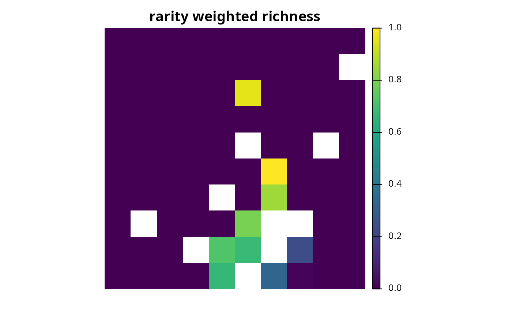
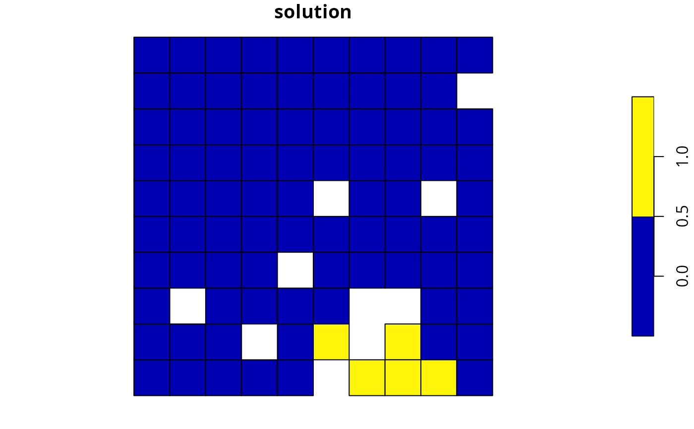
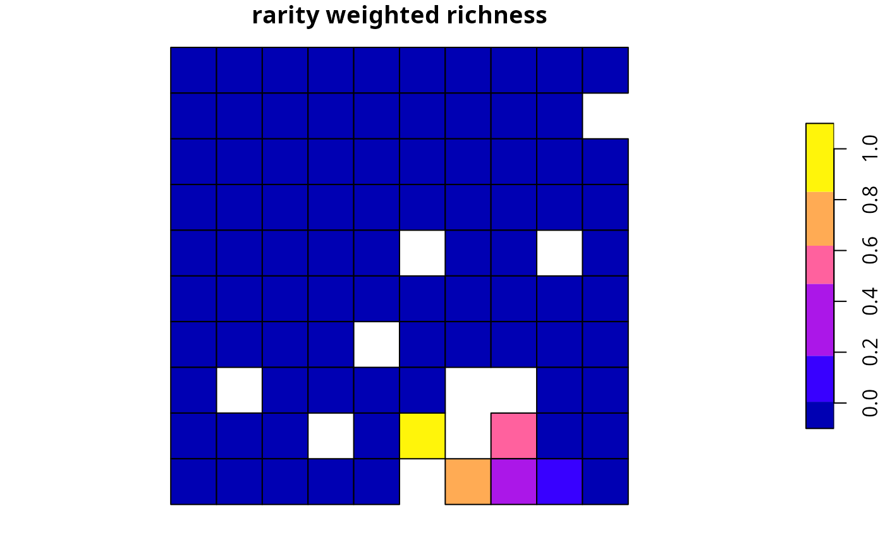
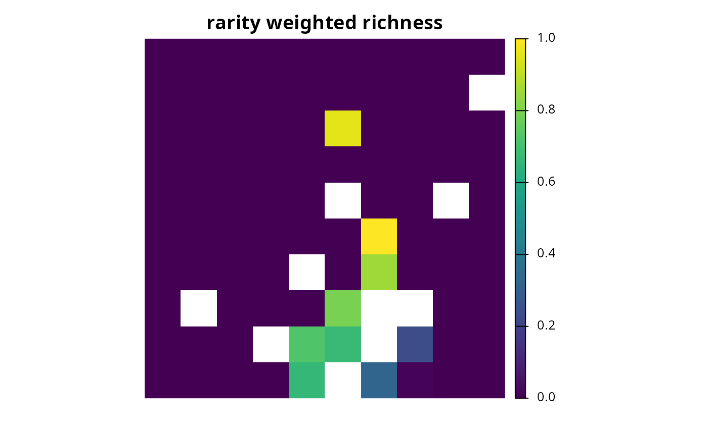
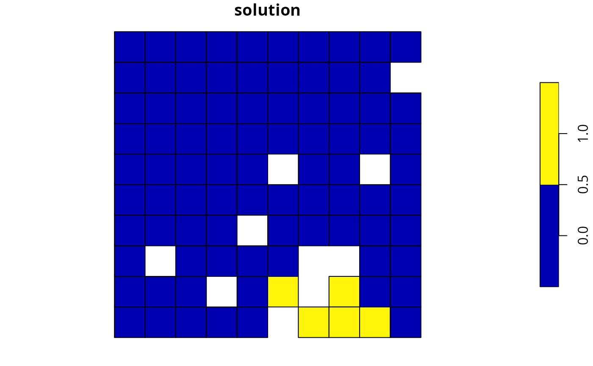
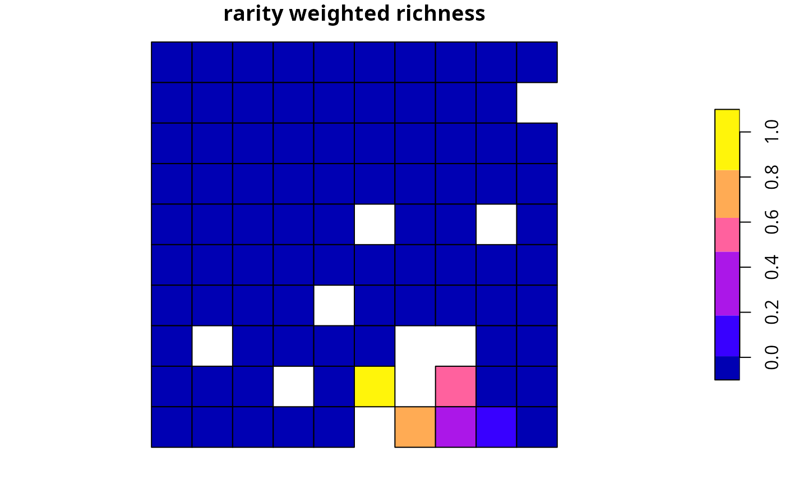

Evaluate solution importance using rarity weighted richness scores
Source:R/eval_rare_richness_importance.R
eval_rare_richness_importance.RdCalculate importance scores for planning units selected in a solution using rarity weighted richness scores (based on Williams et al. 1996).
Usage
eval_rare_richness_importance(x, solution, ...)
# S4 method for ConservationProblem,numeric
eval_rare_richness_importance(x, solution, rescale, ...)
# S4 method for ConservationProblem,matrix
eval_rare_richness_importance(x, solution, rescale, ...)
# S4 method for ConservationProblem,data.frame
eval_rare_richness_importance(x, solution, rescale, ...)
# S4 method for ConservationProblem,Spatial
eval_rare_richness_importance(x, solution, rescale, ...)
# S4 method for ConservationProblem,sf
eval_rare_richness_importance(x, solution, rescale, ...)
# S4 method for ConservationProblem,Raster
eval_rare_richness_importance(x, solution, rescale, ...)
# S4 method for ConservationProblem,SpatRaster
eval_rare_richness_importance(x, solution, rescale, ...)Arguments
- x
problem()object.- solution
numeric,matrix,data.frame,terra::rast(), orsf::sf()object. The argument should be in the same format as the planning unit cost data in the argument tox. See the Solution format section for more information.- ...
not used.
- rescale
logicalflag indicating if replacement cost values -- excepting infinite (Inf) and zero values -- should be rescaled to range between 0.01 and 1. Defaults toTRUE.
Value
A numeric, matrix, data.frame,
terra::rast(), or sf::sf() object
containing the importance scores for each planning
unit in the solution. Specifically, the returned object is in the
same format as the planning unit data in the argument to x.
Details
Rarity weighted richness scores are calculated using the following terms. Let \(I\) denote the set of planning units (indexed by \(i\)), let \(J\) denote the set of conservation features (indexed by \(j\)), let \(r_{ij}\) denote the amount of feature \(j\) associated with planning unit \(i\), and let \(m_j\) denote the maximum value of feature \(j\) in \(r_{ij}\) in all planning units \(i \in I\). To calculate the rarity weighted richness (RWR) for planning unit \(k\):
$$ \mathit{RWR}_{k} = \sum_{j}^{J} \frac{ \frac{r_{ik}}{m_j} }{ \sum_{i}^{I}r_{ij}} $$
This method is only recommended for large-scaled conservation planning exercises (i.e., more than 100,000 planning units) where importance scores cannot be calculated using other methods in a feasible period of time. This is because rarity weighted richness scores cannot (i) account for the cost of different planning units, (ii) account for multiple management zones, and (iii) identify truly irreplaceable planning units --- unlike the replacement cost metric which does not suffer any of these limitations.
Solution format
Broadly speaking, the argument to solution must be in the same format as
the planning unit data in the argument to x.
Further details on the correct format are listed separately
for each of the different planning unit data formats:
xhasnumericplanning unitsThe argument to
solutionmust be anumericvector with each element corresponding to a different planning unit. It should have the same number of planning units as those in the argument tox. Additionally, any planning units missing cost (NA) values should also have missing (NA) values in the argument tosolution.xhasmatrixplanning unitsThe argument to
solutionmust be amatrixvector with each row corresponding to a different planning unit, and each column correspond to a different management zone. It should have the same number of planning units and zones as those in the argument tox. Additionally, any planning units missing cost (NA) values for a particular zone should also have a missing (NA) values in the argument tosolution.xhasterra::rast()planning unitsThe argument to
solutionbe aterra::rast()object where different grid cells (pixels) correspond to different planning units and layers correspond to a different management zones. It should have the same dimensionality (rows, columns, layers), resolution, extent, and coordinate reference system as the planning units in the argument tox. Additionally, any planning units missing cost (NA) values for a particular zone should also have missing (NA) values in the argument tosolution.xhasdata.frameplanning unitsThe argument to
solutionmust be adata.framewith each column corresponding to a different zone, each row corresponding to a different planning unit, and cell values corresponding to the solution value. This means that if adata.frameobject containing the solution also contains additional columns, then these columns will need to be subsetted prior to using this function (see below for example withsf::sf()data). Additionally, any planning units missing cost (NA) values for a particular zone should also have missing (NA) values in the argument tosolution.xhassf::sf()planning unitsThe argument to
solutionmust be asf::sf()object with each column corresponding to a different zone, each row corresponding to a different planning unit, and cell values corresponding to the solution value. This means that if thesf::sf()object containing the solution also contains additional columns, then these columns will need to be subsetted prior to using this function (see below for example). Additionally, the argument tosolutionmust also have the same coordinate reference system as the planning unit data. Furthermore, any planning units missing cost (NA) values for a particular zone should also have missing (NA) values in the argument tosolution.
References
Williams P, Gibbons D, Margules C, Rebelo A, Humphries C, and Pressey RL (1996) A comparison of richness hotspots, rarity hotspots and complementary areas for conserving diversity using British birds. Conservation Biology, 10: 155--174.
See also
See importance for an overview of all functions for evaluating the importance of planning units selected in a solution.
Other importances:
eval_ferrier_importance(),
eval_rank_importance(),
eval_replacement_importance()
Examples
# \dontrun{
# seed seed for reproducibility
set.seed(600)
# load data
sim_pu_raster <- get_sim_pu_raster()
sim_pu_polygons <- get_sim_pu_polygons()
sim_features <- get_sim_features()
# create minimal problem with raster planning units
p1 <-
problem(sim_pu_raster, sim_features) %>%
add_min_set_objective() %>%
add_relative_targets(0.1) %>%
add_binary_decisions() %>%
add_default_solver(gap = 0, verbose = FALSE)
# solve problem
s1 <- solve(p1)
# print solution
print(s1)
#> class : SpatRaster
#> dimensions : 10, 10, 1 (nrow, ncol, nlyr)
#> resolution : 0.1, 0.1 (x, y)
#> extent : 0, 1, 0, 1 (xmin, xmax, ymin, ymax)
#> coord. ref. : Undefined Cartesian SRS
#> source(s) : memory
#> varname : sim_pu_raster
#> name : layer
#> min value : 0
#> max value : 1
# plot solution
plot(s1, main = "solution", axes = FALSE)
 # calculate importance scores
rwr1 <- eval_rare_richness_importance(p1, s1)
# print importance scores
print(rwr1)
#> class : SpatRaster
#> dimensions : 10, 10, 1 (nrow, ncol, nlyr)
#> resolution : 0.1, 0.1 (x, y)
#> extent : 0, 1, 0, 1 (xmin, xmax, ymin, ymax)
#> coord. ref. : Undefined Cartesian SRS
#> source(s) : memory
#> varname : sim_pu_raster
#> name : rwr
#> min value : 0
#> max value : 1
# plot importance scores
plot(rwr1, main = "rarity weighted richness", axes = FALSE)

# create minimal problem with polygon planning units
p2 <-
problem(sim_pu_polygons, sim_features, cost_column = "cost") %>%
add_min_set_objective() %>%
add_relative_targets(0.05) %>%
add_binary_decisions() %>%
add_default_solver(gap = 0, verbose = FALSE)
# solve problem
s2 <- solve(p2)
# print solution
print(s2)
#> Simple feature collection with 90 features and 4 fields
#> Geometry type: POLYGON
#> Dimension: XY
#> Bounding box: xmin: 0 ymin: 0 xmax: 1 ymax: 1
#> Projected CRS: Undefined Cartesian SRS
#> # A tibble: 90 × 5
#> cost locked_in locked_out solution_1 geom
#> <dbl> <lgl> <lgl> <dbl> <POLYGON [m]>
#> 1 216. FALSE FALSE 0 ((0 1, 0.1 1, 0.1 0.9, 0 0.9, 0 1))
#> 2 213. FALSE FALSE 0 ((0.1 1, 0.2 1, 0.2 0.9, 0.1 0.9, 0.1 …
#> 3 207. FALSE FALSE 0 ((0.2 1, 0.3 1, 0.3 0.9, 0.2 0.9, 0.2 …
#> 4 209. FALSE TRUE 0 ((0.3 1, 0.4 1, 0.4 0.9, 0.3 0.9, 0.3 …
#> 5 214. FALSE FALSE 0 ((0.4 1, 0.5 1, 0.5 0.9, 0.4 0.9, 0.4 …
#> 6 214. FALSE FALSE 0 ((0.5 1, 0.6 1, 0.6 0.9, 0.5 0.9, 0.5 …
#> 7 210. FALSE FALSE 0 ((0.6 1, 0.7 1, 0.7 0.9, 0.6 0.9, 0.6 …
#> 8 211. FALSE TRUE 0 ((0.7 1, 0.8 1, 0.8 0.9, 0.7 0.9, 0.7 …
#> 9 210. FALSE FALSE 0 ((0.8 1, 0.9 1, 0.9 0.9, 0.8 0.9, 0.8 …
#> 10 204. FALSE FALSE 0 ((0.9 1, 1 1, 1 0.9, 0.9 0.9, 0.9 1))
#> # ℹ 80 more rows
# plot solution
plot(s2[, "solution_1"], main = "solution")

# calculate importance scores
rwr2 <- eval_rare_richness_importance(p2, s2[, "solution_1"])
# plot importance scores
plot(rwr2, main = "rarity weighted richness")

# }
# calculate importance scores
rwr1 <- eval_rare_richness_importance(p1, s1)
# print importance scores
print(rwr1)
#> class : SpatRaster
#> dimensions : 10, 10, 1 (nrow, ncol, nlyr)
#> resolution : 0.1, 0.1 (x, y)
#> extent : 0, 1, 0, 1 (xmin, xmax, ymin, ymax)
#> coord. ref. : Undefined Cartesian SRS
#> source(s) : memory
#> varname : sim_pu_raster
#> name : rwr
#> min value : 0
#> max value : 1
# plot importance scores
plot(rwr1, main = "rarity weighted richness", axes = FALSE)

# create minimal problem with polygon planning units
p2 <-
problem(sim_pu_polygons, sim_features, cost_column = "cost") %>%
add_min_set_objective() %>%
add_relative_targets(0.05) %>%
add_binary_decisions() %>%
add_default_solver(gap = 0, verbose = FALSE)
# solve problem
s2 <- solve(p2)
# print solution
print(s2)
#> Simple feature collection with 90 features and 4 fields
#> Geometry type: POLYGON
#> Dimension: XY
#> Bounding box: xmin: 0 ymin: 0 xmax: 1 ymax: 1
#> Projected CRS: Undefined Cartesian SRS
#> # A tibble: 90 × 5
#> cost locked_in locked_out solution_1 geom
#> <dbl> <lgl> <lgl> <dbl> <POLYGON [m]>
#> 1 216. FALSE FALSE 0 ((0 1, 0.1 1, 0.1 0.9, 0 0.9, 0 1))
#> 2 213. FALSE FALSE 0 ((0.1 1, 0.2 1, 0.2 0.9, 0.1 0.9, 0.1 …
#> 3 207. FALSE FALSE 0 ((0.2 1, 0.3 1, 0.3 0.9, 0.2 0.9, 0.2 …
#> 4 209. FALSE TRUE 0 ((0.3 1, 0.4 1, 0.4 0.9, 0.3 0.9, 0.3 …
#> 5 214. FALSE FALSE 0 ((0.4 1, 0.5 1, 0.5 0.9, 0.4 0.9, 0.4 …
#> 6 214. FALSE FALSE 0 ((0.5 1, 0.6 1, 0.6 0.9, 0.5 0.9, 0.5 …
#> 7 210. FALSE FALSE 0 ((0.6 1, 0.7 1, 0.7 0.9, 0.6 0.9, 0.6 …
#> 8 211. FALSE TRUE 0 ((0.7 1, 0.8 1, 0.8 0.9, 0.7 0.9, 0.7 …
#> 9 210. FALSE FALSE 0 ((0.8 1, 0.9 1, 0.9 0.9, 0.8 0.9, 0.8 …
#> 10 204. FALSE FALSE 0 ((0.9 1, 1 1, 1 0.9, 0.9 0.9, 0.9 1))
#> # ℹ 80 more rows
# plot solution
plot(s2[, "solution_1"], main = "solution")

# calculate importance scores
rwr2 <- eval_rare_richness_importance(p2, s2[, "solution_1"])
# plot importance scores
plot(rwr2, main = "rarity weighted richness")

# }